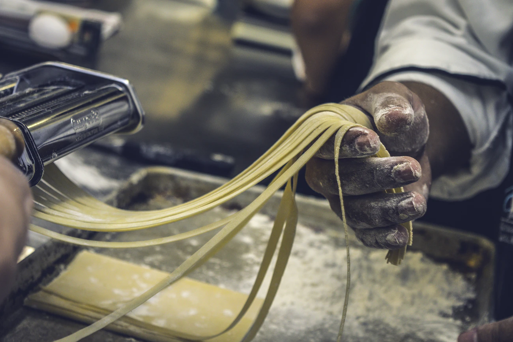

About Crumbs & Co
Home recipes for people who cook after work. Every recipe is tested twice, with normal pans and shop ingredients, and has a time you can trust.

Home recipes for people who cook after work. Every recipe is tested twice, with normal pans and shop ingredients, and has a time you can trust.